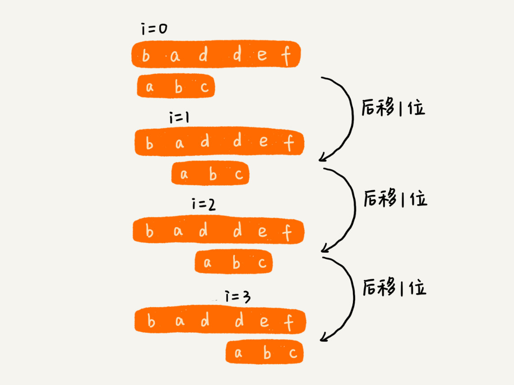
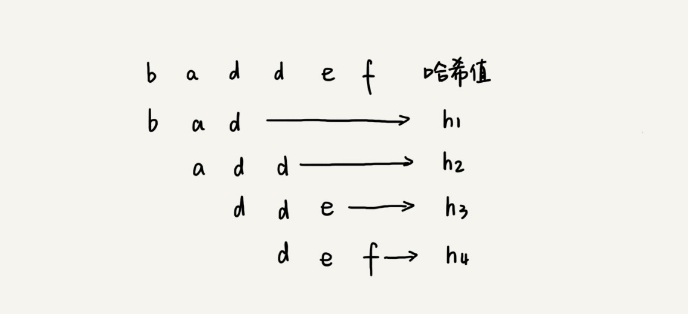
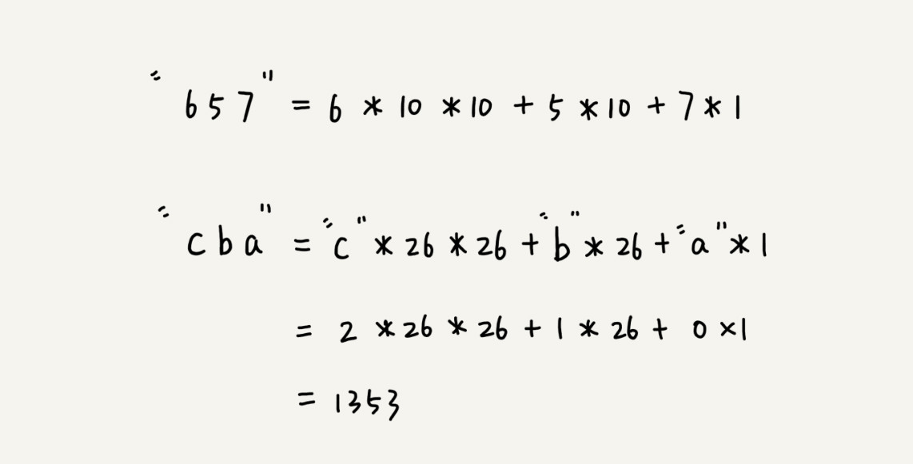
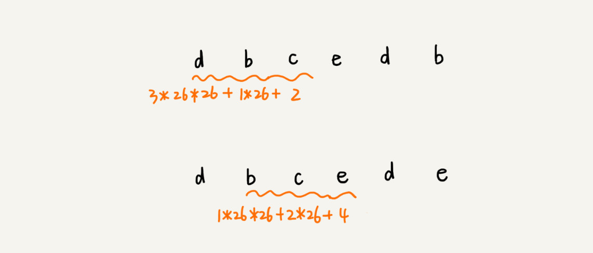
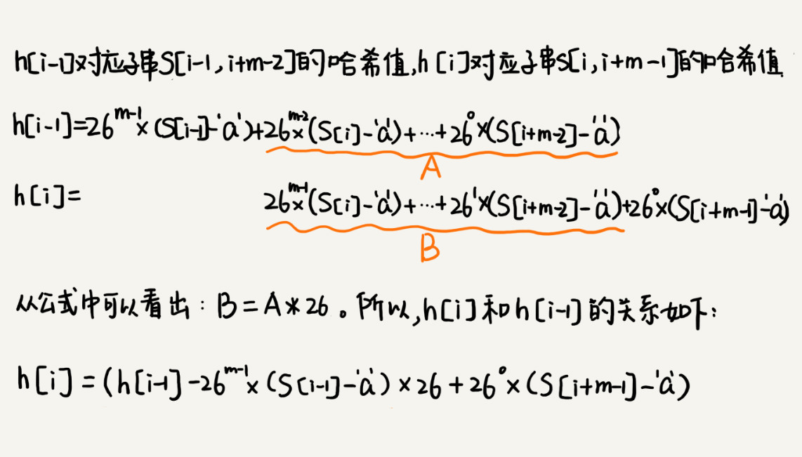
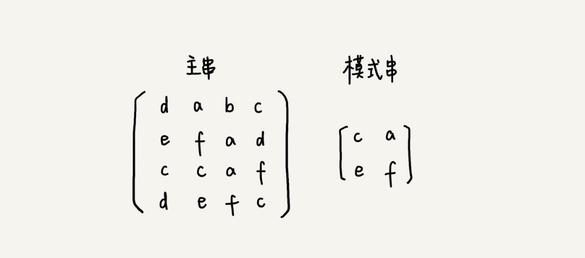

本文最后更新于：9 个月前
字符串匹配这样一个功能，对于任何一个开发工程师来说，应该都不会陌生。用的最多的就是编程语言提供的字符串查找函数，比如 Java 中的 indexOf()，Python 中的 find() 函数等，它们底层就是依赖字符串匹配算法。
字符串匹配算法很多，比较经典的有：BF 算法和 RK 算法以及 BM 算法和 KMP 算法。
BF 算法
BF 算法中的 BF 是 Brute Force 的缩写，中文叫作暴力匹配算法，也叫朴素匹配算法。从名字可以看出，这种算法的字符串匹配方式很“暴力”，当然也就会比较简单、好懂，但相应的性能也不高。
先定义两个概念，方便后面讲解。它们分别是主串和模式串。这俩概念很好理解，举个例子。
比方说，在字符串 A 中查找字符串 B，那字符串 A 就是主串，字符串 B 就是模式串。把主串的长度记作 n，模式串的长度记作 m。因为是在主串中查找模式串，所以 n>m。
作为最简单、最暴力的字符串匹配算法，BF 算法的思想可以用一句话来概括，那就是，在主串中，检查起始位置分别是 0、1、2…n-m 且长度为 m 的 n-m+1 个子串，看有没有跟模式串匹配的。

从上面的算法思想和例子，可以看出，在极端情况下，比如主串是“aaaaa…aaaaaa”（省略号表示有很多重复的字符 a），模式串是“aaaaab”。每次都比对 m 个字符，要比对 n-m+1 次，所以，这种算法的最坏情况时间复杂度是 $O(n*m)$。
尽管理论上，BF 算法的时间复杂度很高，是 $O(n*m)$，但在实际的开发中，它却是一个比较常用的字符串匹配算法。为什么这么说呢？原因有两点。
第一，实际的软件开发中，大部分情况下，模式串和主串的长度都不会太长。而且每次模式串与主串中的子串匹配的时候，当中途遇到不能匹配的字符的时候，就可以就停止了，不需要把 m 个字符都比对一下。所以，尽管理论上的最坏情况时间复杂度是 $O(n*m)$，但是，统计意义上，大部分情况下，算法执行效率要比这个高很多。
第二，朴素字符串匹配算法思想简单，代码实现也非常简单。简单意味着不容易出错，如果有 bug 也容易暴露和修复。在工程中，在满足性能要求的前提下，简单是首选。这也是常说的KISS（Keep it Simple and Stupid）设计原则。
所以，在实际的软件开发中，绝大部分情况下，朴素的字符串匹配算法就够用了。
RK 算法
RK 算法的全称叫 Rabin-Karp 算法，是由它的两位发明者 Rabin 和 Karp 的名字来命名的。这个算法理解起来也不是很难。个人觉得，它其实就是刚刚的 BF 算法的升级版。
RK 算法的思路是这样的：通过哈希算法对主串中的 n-m+1 个子串分别求哈希值，然后逐个与模式串的哈希值比较大小。如果某个子串的哈希值与模式串相等，那就说明对应的子串和模式串匹配了（这里先不考虑哈希冲突的问题）。因为哈希值是一个数字，数字之间比较是否相等是非常快速的，所以模式串和子串比较的效率就提高了。

不过，通过哈希算法计算子串的哈希值的时候，需要遍历子串中的每个字符。尽管模式串与子串比较的效率提高了，但是，算法整体的效率并没有提高。有没有方法可以提高哈希算法计算子串哈希值的效率呢？
这就需要哈希算法设计的非常有技巧了。假设要匹配的字符串的字符集中只包含 K 个字符，可以用一个 K 进制数来表示一个子串，这个 K 进制数转化成十进制数，作为子串的哈希值。表述起来有点抽象，举了一个例子。
在十进制的表示法中，一个数字的值是通过下面的方式计算出来的。对应到二十六进制，一个包含 a 到 z 这 26 个字符的字符串，计算哈希的时候，只需要把进位从 10 改成 26 就可以。

现在，为了方便解释，假设字符串中只包含 a～z 这 26 个小写字符，用二十六进制来表示一个字符串，对应的哈希值就是二十六进制数转化成十进制的结果。
这种哈希算法有一个特点，在主串中，相邻两个子串的哈希值的计算公式有一定关系。这有个例子，先找一下规律，再来看后面的讲解。

从这里例子中，很容易就能得出这样的规律：相邻两个子串 s[i-1] 和 s[i]（i 表示子串在主串中的起始位置，子串的长度都为 m），对应的哈希值计算公式有交集，也就是说，可以使用 s[i-1] 的哈希值很快的计算出 s[i] 的哈希值。如果用公式表示的话，就是下面这个样子：

不过，这里有一个小细节需要注意，那就是 $26^{m-1}$ 这部分的计算，可以通过查表的方法来提高效率。事先计算好 $26^0$、$26^1$、$26^2$……$26^{m-1}$，并且存储在一个长度为 m 的数组中，公式中的“次方”就对应数组的下标。当需要计算 26 的 x 次方的时候，就可以从数组的下标为 x 的位置取值，直接使用，省去了计算的时间。
RK 算法是 BF 算法的改进，它巧妙借助了哈希算法，让匹配的效率有了很大的提升。RK 算法的效率要比 BF 算法高，现在，就来分析一下，RK 算法的时间复杂度到底是多少呢？
整个 RK 算法包含两部分，计算子串哈希值和模式串哈希值与子串哈希值之间的比较。第一部分，前面也分析了，可以通过设计特殊的哈希算法，只需要扫描一遍主串就能计算出所有子串的哈希值了，所以这部分的时间复杂度是 $O(n)$。
模式串哈希值与每个子串哈希值之间的比较的时间复杂度是 $O(1)$，总共需要比较 n-m+1 个子串的哈希值，所以，这部分的时间复杂度也是 $O(n)$。所以，RK 算法整体的时间复杂度就是 $O(n)$。
这里还有一个问题就是，模式串很长，相应的主串中的子串也会很长，通过上面的哈希算法计算得到的哈希值就可能很大，如果超过了计算机中整型数据可以表示的范围，那该如何解决呢？
刚刚设计的哈希算法是没有散列冲突的，也就是说，一个字符串与一个二十六进制数一一对应，不同的字符串的哈希值肯定不一样。因为是基于进制来表示一个字符串的，可以类比成十进制、十六进制来思考一下。实际上，为了能将哈希值落在整型数据范围内，可以牺牲一下，允许哈希冲突。这个时候哈希算法该如何设计呢？
哈希算法的设计方法有很多，举一个例子说明一下。假设字符串中只包含 a～z 这 26 个英文字母，那每个字母对应一个数字，比如 a 对应 1，b 对应 2，以此类推，z 对应 26。可以把字符串中每个字母对应的数字相加，最后得到的和作为哈希值。这种哈希算法产生的哈希值的数据范围就相对要小很多了。
不过，你也应该发现，这种哈希算法的哈希冲突概率也是挺高的。当然，只是举了一个最简单的设计方法，还有很多更加优化的方法，比如将每一个字母从小到大对应一个素数，而不是 1，2，3……这样的自然数，这样冲突的概率就会降低一些。
那现在新的问题来了。之前只需要比较一下模式串和子串的哈希值，如果两个值相等，那这个子串就一定可以匹配模式串。但是，当存在哈希冲突的时候，有可能存在这样的情况，子串和模式串的哈希值虽然是相同的，但是两者本身并不匹配。
实际上，解决方法很简单。当发现一个子串的哈希值跟模式串的哈希值相等的时候，只需要再对比一下子串和模式串本身就好了。当然，如果子串的哈希值与模式串的哈希值不相等，那对应的子串和模式串肯定也是不匹配的，就不需要比对子串和模式串本身了。
所以，哈希算法的冲突概率要相对控制得低一些，如果存在大量冲突，就会导致 RK 算法的时间复杂度退化，效率下降。极端情况下，如果存在大量的冲突，每次都要再对比子串和模式串本身，那时间复杂度就会退化成 $O(n*m)$。但也不要太悲观，一般情况下，冲突不会很多，RK 算法的效率还是比 BF 算法高的。
总结
BF 算法是最简单、粗暴的字符串匹配算法，它的实现思路是，拿模式串与主串中是所有子串匹配，看是否有能匹配的子串。所以，时间复杂度也比较高，是 $O(n*m)$，n、m 表示主串和模式串的长度。不过，在实际的软件开发中，因为这种算法实现简单，对于处理小规模的字符串匹配很好用。
RK 算法是借助哈希算法对 BF 算法进行改造，即对每个子串分别求哈希值，然后拿子串的哈希值与模式串的哈希值比较，减少了比较的时间。所以，理想情况下，RK 算法的时间复杂度是 $O(n)$，跟 BF 算法相比，效率提高了很多。不过这样的效率取决于哈希算法的设计方法，如果存在冲突的情况下，时间复杂度可能会退化。极端情况下，哈希算法大量冲突，时间复杂度就退化为 $O(n*m)$。
思考
假设有下面这样一个二维字符串矩阵（图中的主串），借助上面的处理思路，如何在其中查找另一个二维字符串矩阵（图中的模式串）呢？

以模式串矩阵的大小，去匹配主串矩阵，每个小矩阵可以构建成字符串，就能用
RK算法做字符串匹配了。如果主串的大小是
M * N，模式串大小为m * n，则时间复杂度为 $O(M - m + 1) * (N - n + 1)$。
本博客所有文章除特别声明外，均采用 CC BY-SA 3.0协议 。转载请注明出处！